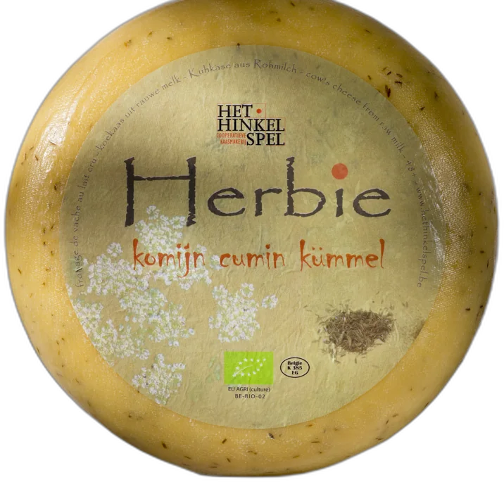
Herbie
Goudse boerenkaas met kruiden in de wrongel. Er zijn zes varianten, van komijn tot peper-look.
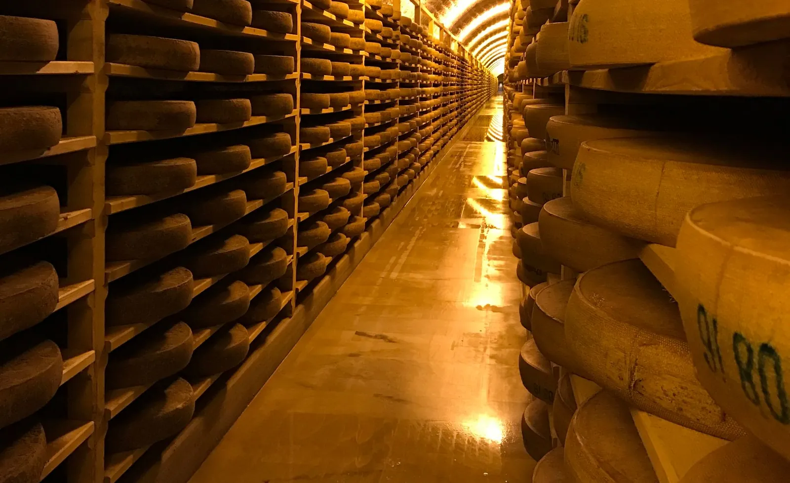
Coöperatieve kaasmakerij sinds 1983
Rauwe, biologische melk, wat zuursel, stremsel en zout. En daarna vooral tijd. Zo maken we onze kazen, en zo snijden we ze in onze winkels graag voor je aan.
4,7 uit 203 reviews op Google
Eigen makelij
Vlotte Goudse kazen, rondborstige rouges en een eigenzinnige blauwschimmel. Allemaal van rauwe, biologische melk, zonder bewaarmiddelen of kleurstoffen.

Goudse boerenkaas met kruiden in de wrongel. Er zijn zes varianten, van komijn tot peper-look.
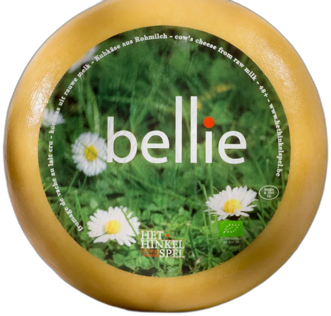
Onze Goudse boerenkaas zonder franjes. Jong, licht belegen of oud gerijpt.
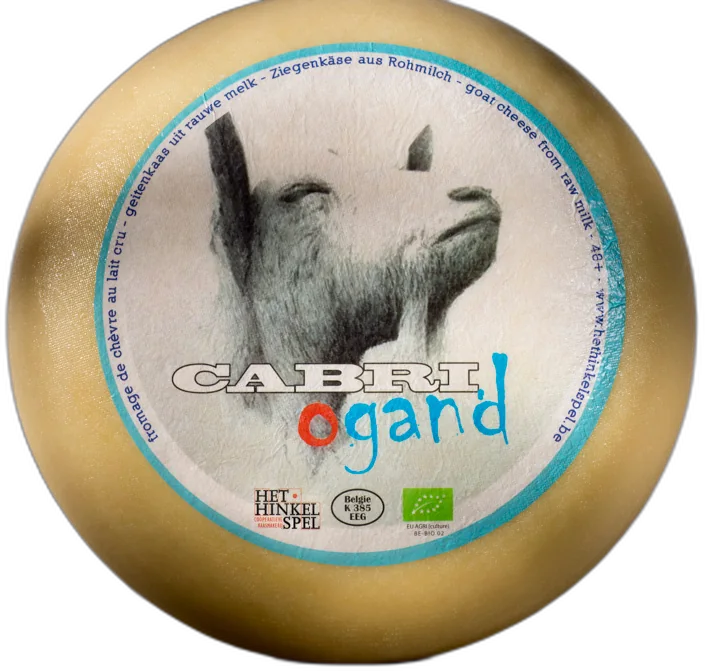
Gemaakt zoals Herbie en Bellie, maar met geitenmelk. Ook licht belegen, voor wie het wat sterker wil.
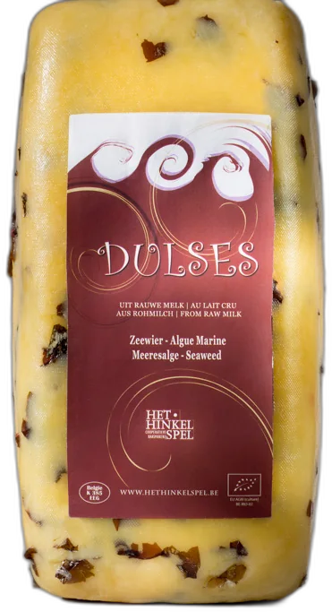
Met rood zeewier uit een Bretoense baai en een puntje knoflook. Er is ook een gerookte.
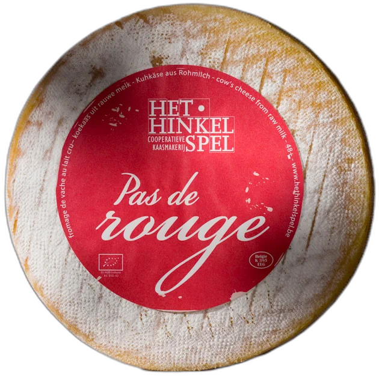
Een paterskaas. We wassen hem met zout water, zodat de roodbacterie zijn werk kan doen.
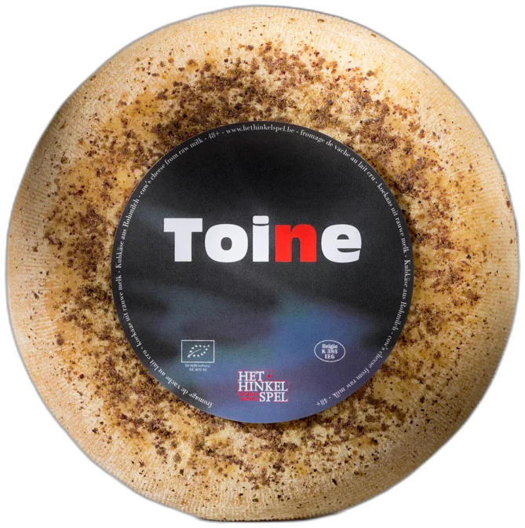
Gemaakt zoals Pas de Rouge, maar spannender met knoflook en gemalen roze peper.
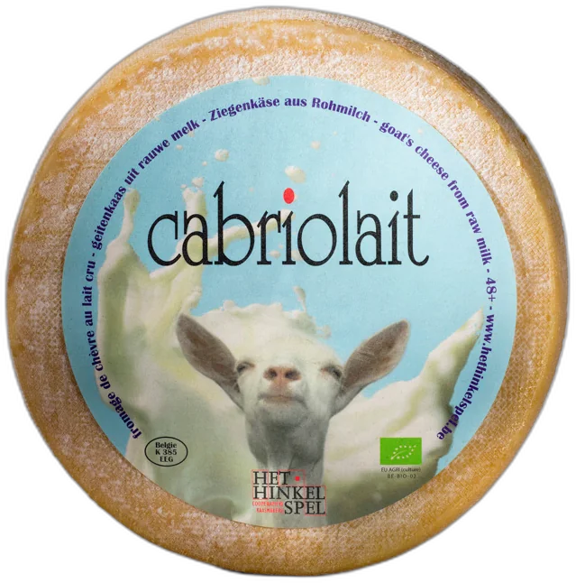
Geitenkaas met een gewassen korst. Fijner van textuur en minder vettig.
Het kruidige broertje van de Pas de Rouge. Die verdient een eigen plekje.
Lees verder ↓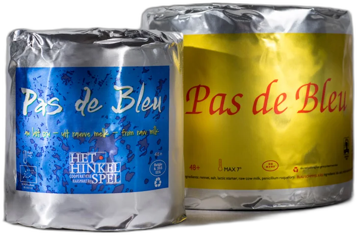
Na het zouten komt de schimmel erbij. Met lange naalden prikken we in de kaas, zodat het blauw tot in het hart kan groeien. Dat geeft hem zijn kleur en zijn pit. Er is ook een versie met geitenmelk.
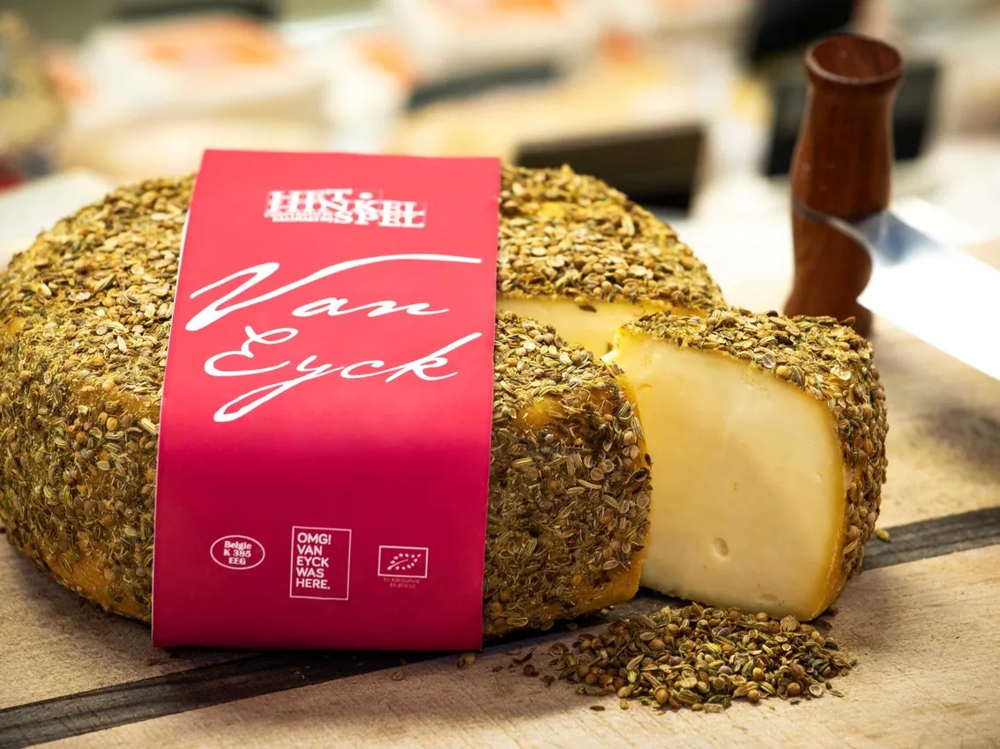
World Cheese Awards 2026
De Van Eyck wassen we extra lang, tot de korst licht kleverig wordt. Daarna rollen we hem in dille-, venkel- en korianderzaad. Hij kwam er samen met Olly Ceulenaere en de Foodarchitect, en dit jaar ging hij met Super Gold naar huis.
Alexander, Jos en Bart willen kaas maken en richten samen een coöperatie op. Dat zijn we nog altijd.
Vanaf dan maken we al onze kazen van biologische melk.
Elke ochtend komt de verse melk vroeg toe in de kaasmakerij. Ongepasteuriseerd, en daarna krijgt elke kaas de tijd die hij nodig heeft.
Nieuw
Onze eigen raclette: Belgisch, rauwmelks en biologisch. Je ziet die drie niet vaak samen. In vier smaken, net op tijd voor de eindejaarsfeesten.
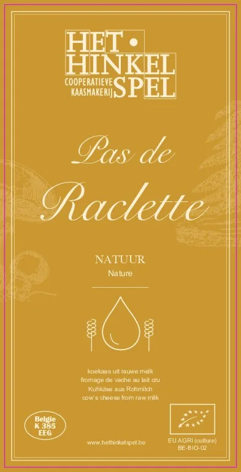
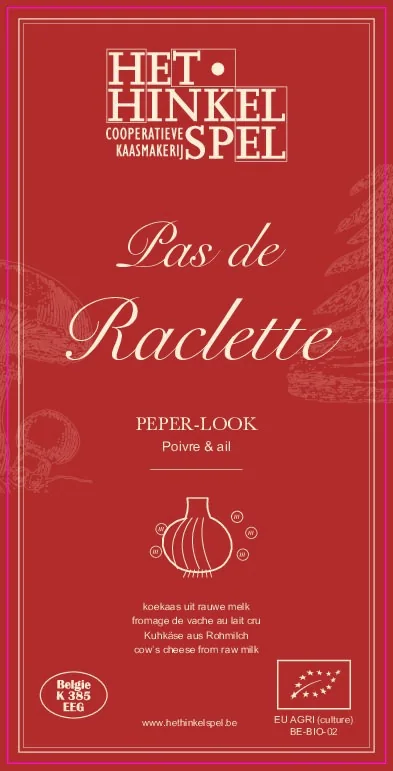
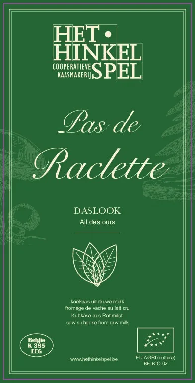
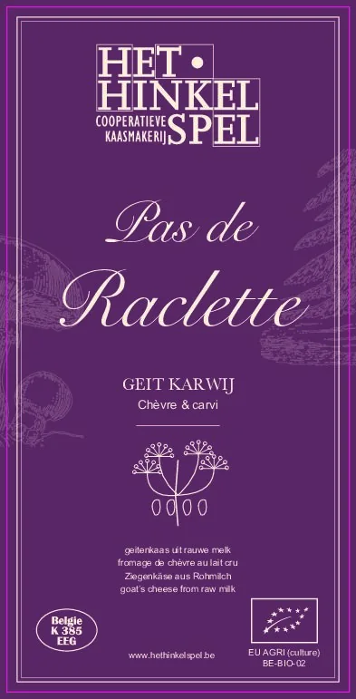
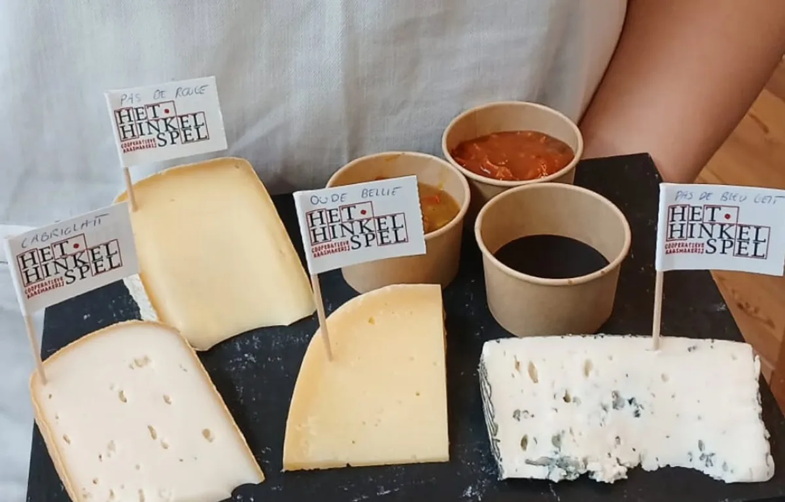
Kaasschotels
Zachte en harde kazen van koe, geit en schaap, mooi afgerijpt en gelegd op een houten plank met gedroogde vruchten en noten. Onze eigen kazen ontbreken natuurlijk niet.
Wat klanten zeggen
Heerlijke biologische kazen , vele zelfgemaakt. Ook het eigen gebrouwen Hinkelspelbier is zálig! Verder vind je er brood van biobakkerij ‘De Trog’, zuivel van bioboerderij ‘De zwaluw’, en wellicht nog andere producten die ik nu niet kan bedenken. Zeer vriendelijke bediening ook! Echt een aanrader!
Geweldige kaasmaker / winkel. Probeer vooral de Pas de Rouge grand cru en de Cabriolait!
De beste kaas van Gent en omstreke.Proficiat aan de kaasmakers en personeel.
Kom proeven
Naast onze eigen kazen vind je een ruime keuze van collega's uit binnen- en buitenland. Vraag gerust een proevertje.
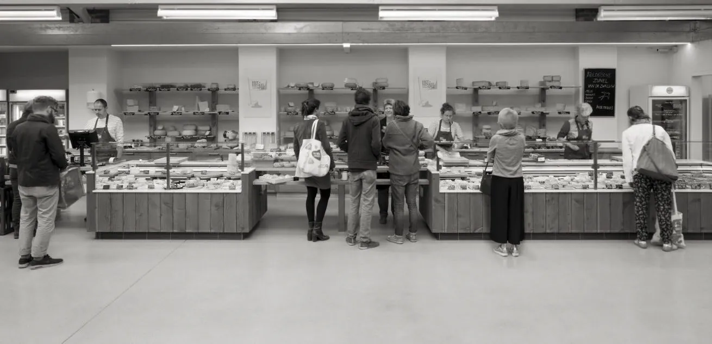
Ferdinand Lousbergskaai 33, 9000 Gent. Met groenten van De Vroente, brood van Copain en een hapje bij De Bergen onder hetzelfde dak.
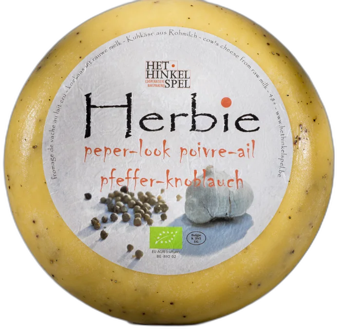
Weststraat 134A, 9940 Sleidinge. Hier maken we onze kazen, en hier koop je ze vers van de bron.
Ik maakte deze demo voor jullie om te tonen wat er kan. Na een kort gesprek maak ik er iets veel persoonlijkers van, helemaal naar jullie wens.
Vrijblijvend. Ik kom langs of we bellen.
Op maat, op jullie eigen domein.
Geen voorschot. Jullie betalen pas als alles klaar is.
Hosting, domeinnaam en kleine wijzigingen, zoals nieuwe openingsuren.
Omdat een voorbeeld meer zegt dan een mail. Zo zien jullie meteen wat er kan, en het kost jullie niets.
Nee. Het gesprek is vrijblijvend. Vinden jullie het niks, dan is het daarmee gedaan.
Na ons gesprek staat jullie site binnen 10 tot 14 dagen online.
Zeker. Jullie domeinnaam kan gewoon blijven, de nieuwe site komt in de plaats van de oude.
Nee, dat doe ik op basis van ons gesprek. Eigen foto's zijn mooi meegenomen, maar niet nodig om te starten.